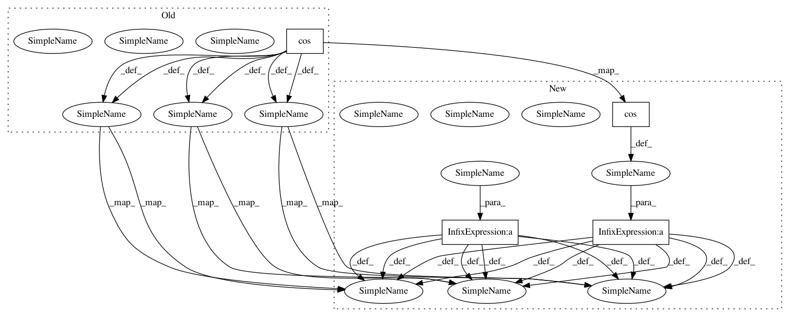

de00082780be884fc90e0113d323bfd63006ffba,main.py,Model,build,#Model#,249
Before Change
hparams.MAX_N_SIGNAL,
-1, hparams.FEATURE_SIZE])
s_separated_signals_valid = tf.expand_dims(tf.complex(
tf.cos(s_mixed_signals_phase),
tf.sin(s_mixed_signals_phase)), 1)
s_separated_signals *= tf.expm1(s_separated_signals_log_valid)
s_valid_snr = tf.reduce_mean(ops.batch_snr(
s_src_signals, s_separated_signals_valid, is_complex=True))
// ===============
// prepare summary
// TODO add impl & summary for word error rate
// FIXME gan_loss summary is broken
with tf.name_scope("train_summary"):
s_loss_summary_t = tf.summary.scalar("loss", s_train_loss)
s_snr_summary_t = tf.summary.scalar("SNR", s_train_snr)
with tf.name_scope("valid_summary"):
s_loss_summary_v = tf.summary.scalar("loss", s_valid_loss)
s_snr_summary_v = tf.summary.scalar("SNR", s_valid_snr)
// apply optimizer
ozer = hparams.get_optimizer()(
learn_rate=hparams.LR, lr_decay=hparams.LR_DECAY)
v_params_li = tf.trainable_variables()
op_sgd_step = ozer.minimize(
s_train_loss, var_list=v_params_li)
self.op_init_params = tf.variables_initializer(v_params_li)
self.op_init_states = tf.variables_initializer(
list(self.s_states_di.values()))
self.train_feed_keys = [
s_src_signals, s_dropout_keep]
train_summary = tf.summary.merge(
[s_loss_summary_t, s_snr_summary_t])
self.train_fetches = [
train_summary,
dict(loss=s_train_loss, SNR=s_train_snr),
op_sgd_step]
self.valid_feed_keys = self.train_feed_keys
valid_summary = tf.summary.merge([s_loss_summary_v, s_snr_summary_v])
self.valid_fetches = [
valid_summary,
dict(loss=s_valid_loss, SNR=s_valid_snr)]
After Change
s_separated_signals_pwr_infer = tf.expm1(
s_separated_signals_log_valid)
s_separated_signals_valid = tf.complex(
tf.cos(s_mixed_signals_phase) * s_separated_signals_pwr_valid,
tf.sin(s_mixed_signals_phase) * s_separated_signals_pwr_valid)
s_separated_signals_infer = tf.complex(
tf.cos(s_mixed_signals_phase) * s_separated_signals_pwr_infer,
tf.sin(s_mixed_signals_phase) * s_separated_signals_pwr_infer)
s_valid_snr = tf.reduce_mean(ops.batch_snr(
s_src_signals, s_separated_signals_valid, is_complex=True))
// ===============
// prepare summary
// TODO add impl & summary for word error rate
// FIXME gan_loss summary is broken
with tf.name_scope("train_summary"):
s_loss_summary_t = tf.summary.scalar("loss", s_train_loss)
s_snr_summary_t = tf.summary.scalar("SNR", s_train_snr)
with tf.name_scope("valid_summary"):
s_loss_summary_v = tf.summary.scalar("loss", s_valid_loss)
s_snr_summary_v = tf.summary.scalar("SNR", s_valid_snr)
// apply optimizer
ozer = hparams.get_optimizer()(
learn_rate=hparams.LR, lr_decay=hparams.LR_DECAY)
v_params_li = tf.trainable_variables()
op_sgd_step = ozer.minimize(
s_train_loss, var_list=v_params_li)
self.op_init_params = tf.variables_initializer(v_params_li)
self.op_init_states = tf.variables_initializer(
list(self.s_states_di.values()))
self.train_feed_keys = [
s_src_signals, s_dropout_keep]
train_summary = tf.summary.merge(
[s_loss_summary_t, s_snr_summary_t])
self.train_fetches = [
train_summary,
dict(loss=s_train_loss, SNR=s_train_snr),
op_sgd_step]
self.valid_feed_keys = self.train_feed_keys
valid_summary = tf.summary.merge([s_loss_summary_v, s_snr_summary_v])
self.valid_fetches = [
valid_summary,
dict(loss=s_valid_loss, SNR=s_valid_snr)]
In pattern: SUPERPATTERN
Frequency: 3
Non-data size: 4
Instances
Project Name: khaotik/DaNet-Tensorflow
Commit Name: de00082780be884fc90e0113d323bfd63006ffba
Time: 2017-08-07
Author: junkkhaotik@gmail.com
File Name: main.py
Class Name: Model
Method Name: build
Project Name: suavecode/SUAVE
Commit Name: 4d72ce3bc21cfce8075b31ac78269d81be25050f
Time: 2016-01-30
Author: ebotero@stanford.edu
File Name: trunk/SUAVE/Methods/Aerodynamics/Fidelity_Zero/Drag/parasite_drag_wing.py
Class Name:
Method Name: parasite_drag_wing
Project Name: khaotik/DaNet-Tensorflow
Commit Name: de00082780be884fc90e0113d323bfd63006ffba
Time: 2017-08-07
Author: junkkhaotik@gmail.com
File Name: main.py
Class Name: Model
Method Name: build
Project Name: suavecode/SUAVE
Commit Name: 76697588ed6da82c507a68074e63a30b809a8a99
Time: 2017-11-03
Author: ebotero@stanford.edu
File Name: trunk/SUAVE/Methods/Aerodynamics/Common/Fidelity_Zero/Lift/weissinger_vortex_lattice.py
Class Name:
Method Name: weissinger_vortex_lattice